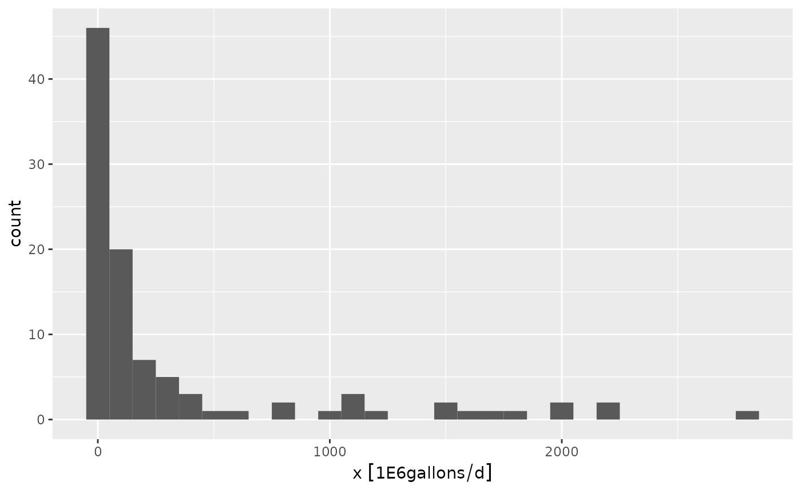

Introduction to Units
ldc relies on the units package to facilitate unit conversions and tracking of units across variables. This is handy if we want to transform units on the fly. I suggest briefly reviewing the units package documentation to become familiar with how units objects are handled. A brief example is shown below:
library(units)
#> udunits database from /usr/share/xml/udunits/udunits2.xml
## generate random data
x <- rlnorm(n = 100, meanlog = log(100), sdlog = log(10))
## attach units, cubic feet per second
x <- set_units(x, "ft^3/s")
x
#> Units: [ft^3/s]
#> [1] 3.305217e+03 2.237243e+01 6.843526e+01 5.130397e-01 8.465099e+02
#> [6] 3.261493e+01 4.209772e+01 1.619673e+01 2.472124e+01 8.180078e+02
#> [11] 5.910870e+03 1.002994e+01 7.187791e+00 5.559155e+02 2.669817e+01
#> [16] 7.557542e+01 1.738401e+01 2.705508e+01 4.896507e+00 1.303612e+03
#> [21] 1.439782e+01 3.661344e+01 5.021760e+03 1.647707e+02 2.560844e+03
#> [26] 7.364910e-01 6.789498e+02 1.184617e+01 7.315961e+01 1.384772e+01
#> [31] 7.428468e+02 7.576590e+02 1.375925e+02 5.815625e+00 4.023443e+01
#> [36] 2.602308e+01 3.559056e+00 2.981858e+04 7.992568e+01 5.448878e+00
#> [41] 5.757906e+02 2.459403e+00 1.312775e+03 6.292475e+00 7.633091e+00
#> [46] 3.772260e+02 1.311790e+01 4.947215e+02 1.808063e+02 2.243639e+02
#> [51] 4.623318e+02 1.027519e+02 2.078196e+02 6.443158e+00 3.172421e+02
#> [56] 1.887825e+00 1.548666e+02 3.073110e+01 1.224608e+00 1.333124e+01
#> [61] 7.415647e+01 9.282686e+01 9.816047e+02 5.311807e+02 9.999362e+03
#> [66] 7.673251e+01 1.993032e+04 3.037631e+02 4.225274e-01 8.347452e+01
#> [71] 6.504620e+02 1.784513e+03 2.930827e+02 2.668672e+03 8.941402e+00
#> [76] 1.019004e+02 4.301757e+00 1.678122e+02 1.166100e+01 2.072369e+01
#> [81] 3.715639e+01 1.617803e+02 1.397819e+03 5.458505e+03 3.031891e+02
#> [86] 2.377440e+01 1.786722e+01 2.393758e+01 1.984455e+01 7.954231e+02
#> [91] 1.380240e+02 3.489321e+03 4.282422e+02 3.968873e+01 7.352239e+01
#> [96] 3.573688e+01 5.207961e+01 7.638658e+01 2.172734e+02 1.113797e+01x is a object of type units which can be used with most R expressions:
x * 86400
#> Units: [ft^3/s]
#> [1] 2.855708e+08 1.932978e+06 5.912806e+06 4.432663e+04 7.313846e+07
#> [6] 2.817930e+06 3.637243e+06 1.399398e+06 2.135916e+06 7.067587e+07
#> [11] 5.106992e+08 8.665870e+05 6.210251e+05 4.803110e+07 2.306722e+06
#> [16] 6.529716e+06 1.501978e+06 2.337559e+06 4.230582e+05 1.126321e+08
#> [21] 1.243972e+06 3.163401e+06 4.338801e+08 1.423619e+07 2.212569e+08
#> [26] 6.363282e+04 5.866127e+07 1.023509e+06 6.320990e+06 1.196443e+06
#> [31] 6.418197e+07 6.546174e+07 1.188799e+07 5.024700e+05 3.476255e+06
#> [36] 2.248394e+06 3.075024e+05 2.576326e+09 6.905579e+06 4.707831e+05
#> [41] 4.974831e+07 2.124924e+05 1.134238e+08 5.436698e+05 6.594990e+05
#> [46] 3.259233e+07 1.133386e+06 4.274394e+07 1.562166e+07 1.938504e+07
#> [51] 3.994547e+07 8.877762e+06 1.795562e+07 5.566888e+05 2.740972e+07
#> [56] 1.631081e+05 1.338047e+07 2.655167e+06 1.058061e+05 1.151819e+06
#> [61] 6.407119e+06 8.020241e+06 8.481065e+07 4.589401e+07 8.639449e+08
#> [66] 6.629689e+06 1.721980e+09 2.624513e+07 3.650637e+04 7.212198e+06
#> [71] 5.619992e+07 1.541820e+08 2.532235e+07 2.305732e+08 7.725371e+05
#> [76] 8.804192e+06 3.716718e+05 1.449897e+07 1.007511e+06 1.790527e+06
#> [81] 3.210312e+06 1.397782e+07 1.207715e+08 4.716148e+08 2.619554e+07
#> [86] 2.054108e+06 1.543728e+06 2.068207e+06 1.714569e+06 6.872456e+07
#> [91] 1.192528e+07 3.014773e+08 3.700012e+07 3.429106e+06 6.352335e+06
#> [96] 3.087667e+06 4.499678e+06 6.599801e+06 1.877242e+07 9.623207e+05The units can be converted:
## convert to cubic feet per day
x <- set_units(x, "ft^3/d")
x
#> Units: [ft^3/d]
#> [1] 2.855708e+08 1.932978e+06 5.912806e+06 4.432663e+04 7.313846e+07
#> [6] 2.817930e+06 3.637243e+06 1.399398e+06 2.135916e+06 7.067587e+07
#> [11] 5.106992e+08 8.665870e+05 6.210251e+05 4.803110e+07 2.306722e+06
#> [16] 6.529716e+06 1.501978e+06 2.337559e+06 4.230582e+05 1.126321e+08
#> [21] 1.243972e+06 3.163401e+06 4.338801e+08 1.423619e+07 2.212569e+08
#> [26] 6.363282e+04 5.866127e+07 1.023509e+06 6.320990e+06 1.196443e+06
#> [31] 6.418197e+07 6.546174e+07 1.188799e+07 5.024700e+05 3.476255e+06
#> [36] 2.248394e+06 3.075024e+05 2.576326e+09 6.905579e+06 4.707831e+05
#> [41] 4.974831e+07 2.124924e+05 1.134238e+08 5.436698e+05 6.594990e+05
#> [46] 3.259233e+07 1.133386e+06 4.274394e+07 1.562166e+07 1.938504e+07
#> [51] 3.994547e+07 8.877762e+06 1.795562e+07 5.566888e+05 2.740972e+07
#> [56] 1.631081e+05 1.338047e+07 2.655167e+06 1.058061e+05 1.151819e+06
#> [61] 6.407119e+06 8.020241e+06 8.481065e+07 4.589401e+07 8.639449e+08
#> [66] 6.629689e+06 1.721980e+09 2.624513e+07 3.650637e+04 7.212198e+06
#> [71] 5.619992e+07 1.541820e+08 2.532235e+07 2.305732e+08 7.725371e+05
#> [76] 8.804192e+06 3.716718e+05 1.449897e+07 1.007511e+06 1.790527e+06
#> [81] 3.210312e+06 1.397782e+07 1.207715e+08 4.716148e+08 2.619554e+07
#> [86] 2.054108e+06 1.543728e+06 2.068207e+06 1.714569e+06 6.872456e+07
#> [91] 1.192528e+07 3.014773e+08 3.700012e+07 3.429106e+06 6.352335e+06
#> [96] 3.087667e+06 4.499678e+06 6.599801e+06 1.877242e+07 9.623207e+05Units can be plotted:
The ggforce package is required to handle plotting units in ggplot2:
library(ggplot2)
library(ggforce)
#> Registered S3 method overwritten by 'ggforce':
#> method from
#> scale_type.units units
ggplot(data.frame(x)) +
geom_histogram(aes(x), binwidth = 100) 
Units with ldc
Stream loads are measured in pounds or kilograms per day for pollutants such as nutrients and sediment. Fecal bacteria loads are typically in colony forming units (cfu) or most probable number (MPN) per day. The included tres_palacios dataset includes bacteria and flow measurements from the Tres Palacios river. Bacteria measurements will need to units in “cfu/100mL” and flow should be in “cubic feet per second.”
library(dplyr)
#>
#> Attaching package: 'dplyr'
#> The following objects are masked from 'package:stats':
#>
#> filter, lag
#> The following objects are masked from 'package:base':
#>
#> intersect, setdiff, setequal, union
## create a cfu unit. it is a simple count, so we just add it as an arbitrary unit.
install_unit("cfu")
## format the data for use in ldc
tres_palacios <- as_tibble(tres_palacios) |>
## flow must have units, here is is in cfs
mutate(Flow = set_units(Flow, "ft^3/s"))|>
## pollutant concentration must have units
mutate(Indicator_Bacteria = set_units(Indicator_Bacteria, "cfu/100mL"))
tres_palacios
#> # A tibble: 7,671 × 4
#> site_no Date Flow Indicator_Bacteria
#> <chr> <date> [ft^3/s] [cfu/100mL]
#> 1 08162600 2000-01-01 0.84 NA
#> 2 08162600 2000-01-02 3 NA
#> 3 08162600 2000-01-03 3.4 NA
#> 4 08162600 2000-01-04 2.6 NA
#> 5 08162600 2000-01-05 1.6 NA
#> 6 08162600 2000-01-06 3.2 NA
#> 7 08162600 2000-01-07 11 NA
#> 8 08162600 2000-01-08 17 NA
#> 9 08162600 2000-01-09 22 NA
#> 10 08162600 2000-01-10 18 NA
#> # … with 7,661 more rowsThe tibble above shows the correct units in each column. What if we want to use metric units for flow?
tres_palacios <- tres_palacios |>
mutate(Flow = set_units(Flow, "m^3/s"))
tres_palacios
#> # A tibble: 7,671 × 4
#> site_no Date Flow Indicator_Bacteria
#> <chr> <date> [m^3/s] [cfu/100mL]
#> 1 08162600 2000-01-01 0.0238 NA
#> 2 08162600 2000-01-02 0.0850 NA
#> 3 08162600 2000-01-03 0.0963 NA
#> 4 08162600 2000-01-04 0.0736 NA
#> 5 08162600 2000-01-05 0.0453 NA
#> 6 08162600 2000-01-06 0.0906 NA
#> 7 08162600 2000-01-07 0.311 NA
#> 8 08162600 2000-01-08 0.481 NA
#> 9 08162600 2000-01-09 0.623 NA
#> 10 08162600 2000-01-10 0.510 NA
#> # … with 7,661 more rowsNow we can calculate the flow and load exceedance probabilities using calc_ldc(). Q and C arguments must have units attached and C must be a concentration unit (mass or counts divided by volume).
## specify the allowable concentration
allowable_concentration <- 126
## set the units
units(allowable_concentration) <- "cfu/100mL"
## calculate the exceedance probabilities along with
## allowable pollutant loads and measured pollutant loads
## at given probabilities
df_ldc <- calc_ldc(tres_palacios,
Q = Flow,
C = Indicator_Bacteria,
allowable_concentration = allowable_concentration)
df_ldc
#> # A tibble: 7,671 × 9
#> site_no Date Flow Indicator_Bacteria Daily_Flow_Volume Daily_Load
#> <chr> <date> [m^3/s] [cfu/100mL] [100mL/d] [cfu/d]
#> 1 08162600 2000-08-18 0.00623 NA 5382466. NA
#> 2 08162600 2000-03-07 0.0119 NA 10275617. NA
#> 3 08162600 2000-03-06 0.0170 NA 14679453. NA
#> 4 08162600 2000-08-22 0.0212 NA 18349317. NA
#> 5 08162600 2000-03-08 0.0221 NA 19083289. NA
#> 6 08162600 2000-08-17 0.0221 NA 19083289. NA
#> 7 08162600 2000-09-11 0.0227 NA 19572604. NA
#> 8 08162600 2000-01-01 0.0238 NA 20551235. NA
#> 9 08162600 2000-08-21 0.0263 NA 22753153. NA
#> 10 08162600 2000-03-05 0.0283 NA 24465755. NA
#> # … with 7,661 more rows, and 3 more variables: Allowable_Daily_Load [cfu/d],
#> # P_Exceedance <dbl>, Flow_Category <fct>Now we have the percent exceedance for daily flow, flow volume, and allowable daily loads. The daily flow volume and daily load volume are huge numbers, so it might make sense to convert those units.
df_ldc |>
mutate(Daily_Flow_Volume = set_units(Daily_Flow_Volume, "m^3/day"),
Allowable_Daily_Load = set_units(Allowable_Daily_Load, "1E9cfu/day"))
#> # A tibble: 7,671 × 9
#> site_no Date Flow Indicator_Bacteria Daily_Flow_Volume Daily_Load
#> <chr> <date> [m^3/s] [cfu/100mL] [m^3/d] [cfu/d]
#> 1 08162600 2000-08-18 0.00623 NA 538. NA
#> 2 08162600 2000-03-07 0.0119 NA 1028. NA
#> 3 08162600 2000-03-06 0.0170 NA 1468. NA
#> 4 08162600 2000-08-22 0.0212 NA 1835. NA
#> 5 08162600 2000-03-08 0.0221 NA 1908. NA
#> 6 08162600 2000-08-17 0.0221 NA 1908. NA
#> 7 08162600 2000-09-11 0.0227 NA 1957. NA
#> 8 08162600 2000-01-01 0.0238 NA 2055. NA
#> 9 08162600 2000-08-21 0.0263 NA 2275. NA
#> 10 08162600 2000-03-05 0.0283 NA 2447. NA
#> # … with 7,661 more rows, and 3 more variables:
#> # Allowable_Daily_Load [1E9cfu/d], P_Exceedance <dbl>, Flow_Category <fct>